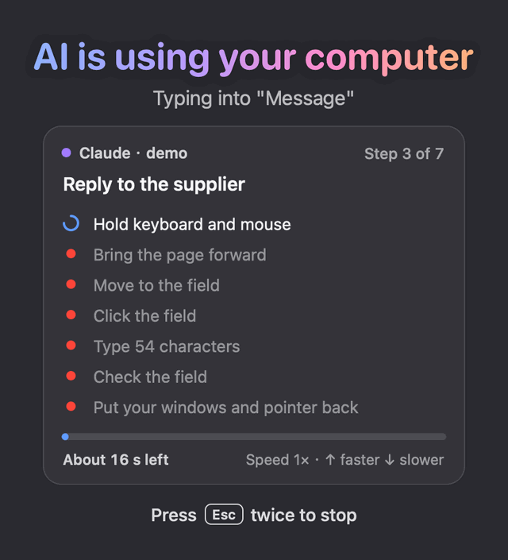

Public pages and APIs
Use an API or web fetch first for public information.
YOUR CHROME. YOUR PACE.
MyChrome is a local MCP server with a native macOS app. It lets Codex, Claude Code and other local stdio MCP clients work in the Google Chrome you already use, with your existing tabs, signed-in accounts and real mouse and keyboard.
For Mac users whose task needs their own Chrome login, existing tabs or a page shared with their assistant.
Apple Silicon · macOS 13+ · Google Chrome
Codex, Claude Code
or another local MCP client · Install from source

HOW IT WORKS
Your assistant joins the page you are already on. MyChrome tells it to wait for your explicit instruction after a handoff. Continuation follows the assistant’s instructions; MyChrome does not enforce a cross-client continuation gate.
Keep your tabs, signed-in accounts and work in progress.
Name the page and outcome. The assistant reads the page first, acts within your authorization and checks the result.
Passwords, verification codes and personal checks come back to you.
The assistant rereads the page and carries on with the same task.
Your pages. Your way of working.
Native macOS app · Your existing Chrome · Local MCP · No extension or debugging portYOUR WAY OF WORKING
Choose how text is entered and how fast the assistant moves. You can also sample your own typing and mouse rhythm to shape later input.
Set your input habits ↗0.5×–3×
Your speed applies to typing, pointer movement and scrolling. Input can follow the task, go key by key, or paste.
Optional rhythm sampling Experimental
Record for three minutes. Timing statistics with enough samples shape later input; the rest keep their defaults. Switch it off, resample or delete it at any time.
Only a local statistical summary is stored: no keys, typed text, screen coordinates, window or app names, or screenshots; raw events are never written to disk. It is not a behavioural clone and does not guarantee a site will accept automation.
YOU CAN ASK
Example requests you can give your assistant. Open your own page, describe the outcome, and let it help from there.
Work on your open page with the details you provide.
“Use MyChrome on the LinkedIn page I have open. Update my About and experience sections with these details, then show me what changed.”
Check your messages and notifications for anything waiting on you.
“Check my Facebook notifications and messages for people trying to reach me. List who needs a response and tell me where you need my help.”
Facebook, Xiaohongshu, Reddit or LinkedIn: you choose the accounts and what gets published.
“Publish this finished article to the accounts I specify. Fill in what each page requires, then report each result and its link.”
These are task ideas, not verified case studies for these sites. What works depends on the website, your account permissions and the current page.
YOU STAY IN CONTROL
The assistant uses your Mac's real pointer and keyboard, and a takeover card shows the task, each step and the time left. Your ordinary input is held back while it works. At a CAPTCHA or bot check, MyChrome stops and hands the page to you; it does not try to solve it.
Press Esc twice within 0.8 seconds to stop the current agent and regain the mouse and keyboard. Another takeover needs a new instruction. MyChrome’s pause control blocks further input from every connection. Stopping does not undo actions already sent.
Explore the controls ↗BRING YOUR ASSISTANT
Codex and Claude Code can use the browser tools and start separate conversations from MyChrome with a model and supported reasoning effort. Other local stdio MCP clients can connect with the printed paths.
| Capability | Codex | Claude Code |
|---|---|---|
| Read and operate Chrome | Supported | Supported |
| New conversation from MyChrome | Supported | Supported |
| Existing conversation shown in MyChrome | With a supported integration and an associated thread | Read-only live view of your terminal session, available in 0.15.0 |
MyChrome runs on the Mac whose Chrome it controls. Your AI client provides model access under its own account; its charges or subscription may apply. In 0.15.0, MyChrome's windows and notifications follow your Mac's language (English or Chinese), with a Language setting under Settings in the menu bar panel.
START IN YOUR CHROME
Apple Silicon · macOS 13+ · Google Chrome in /Applications. Node.js 24+ recommended; 20.19+ and 22.13+ also supported. Git and Xcode Command Line Tools required.
Full setup and permissions guide ↗git clone https://github.com/shuaige121/mychrome-mcp.git
cd mychrome-mcp
bash scripts/setup.shInstall from source · MIT open source · Not published to npm